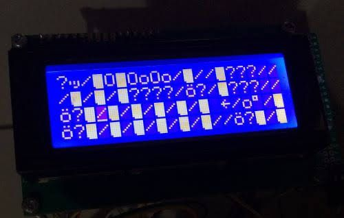
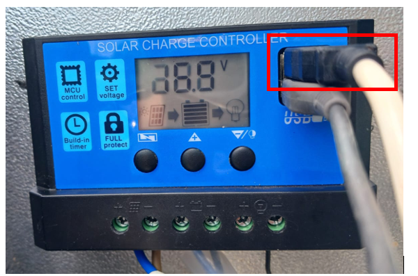
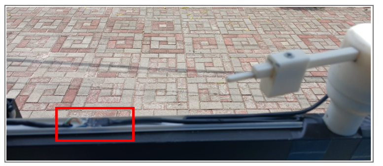
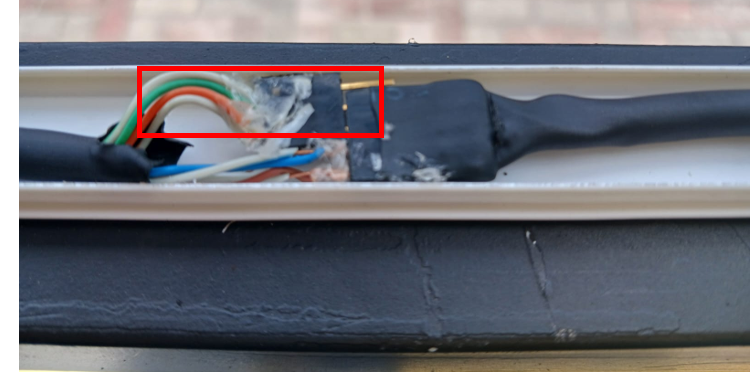

Panduan Mengatasi Masalah pada Sensor & Perangkat
1. LCD (Liquid Crystal Display)
Lcd berfungsi menampilkan informasi terkait suhu, kelembapan, asap/gas, arah dan kecepatan angin. Jika LCD tidak menampilkan informasi atau muncul gambar error seperti di bawah ini:
Cara Mengatasi:
Cabut kabel USB Arduino yang terhubung dengan SCC (solar charge controller) seperti pada gambar di bawah:
2. Upload kode atau data untuk Arduino
Jika ingin upload kode baru, pastikan terlebih dahulu melepas kabel RX dan TX yang terhubung dengan sensor arah angin agar tidak terjadi kegagalan upload code.
Cara Mengatasi:
Warna kabel yang perlu dicabut yaitu orange dan hijau (RX dan TX). Biru dan coklat adalah tegangan + dan –, tidak perlu dicabut.
3. Sensor arah angin tidak tampil atau UNKNOWN
Kemungkinan penyebab:
- Kabel RX dan TX tidak terhubung (data tidak terkirim).
- Kabel power + dan – terlepas.
Cara Mengatasi:
Buka pelindung kabel arah mata angin dan pastikan semua koneksi terhubung dengan benar.
4. Upload kode atau data untuk ESP8266
Penyebab Umum:
Tidak bisa mengupload program dari Arduino IDE ke ESP8266 maupun Arduino.
Cara Mengatasi:
Lepas kabel berwarna ungu yang menghubungkan pin RX ESP dan TX Arduino sebelum upload.
5. Tidak ada tegangan yang masuk ke Arduino
Periksa hal berikut:
- Lihat apakah SCC mengisi baterai (indikator baterai status menyala).
- Periksa indikator "charging status" pada solar panel.
- Ukur output DC-DC Step-Down Converter Module.
- Pastikan kabel arah angin tidak tertukar (+ dan –).
- Pastikan kabel VCC, GND, dan output tersambung dengan benar.
- Gunakan interrupt di mikrokontroler untuk membaca pulsa (attachInterrupt).
- Periksa kontinuitas reed switch dengan multimeter.